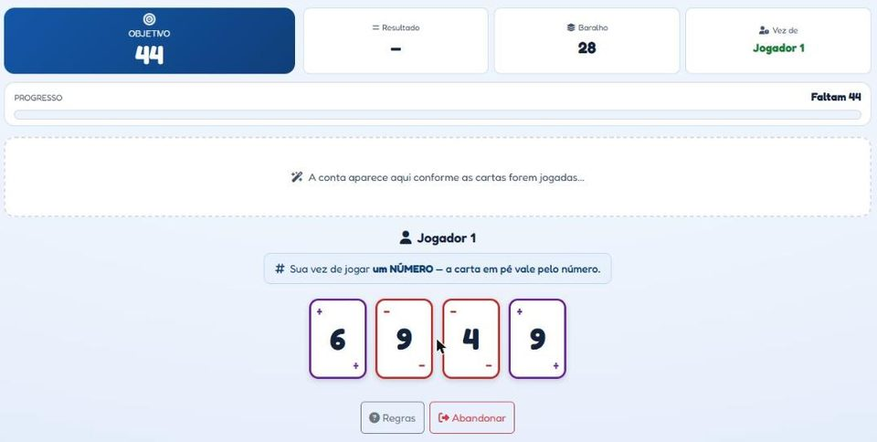
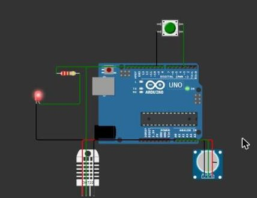
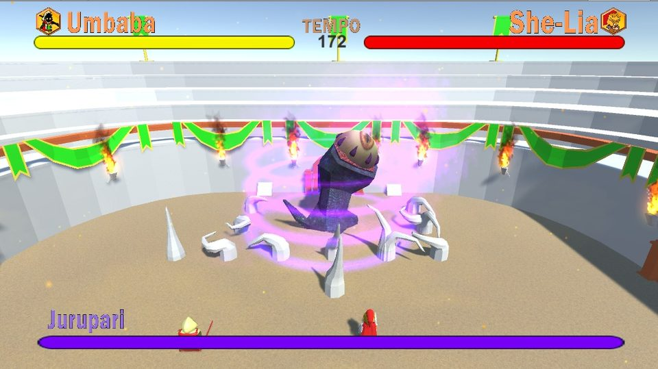
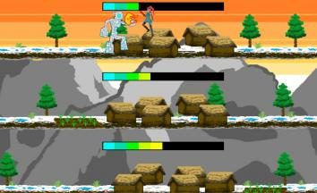
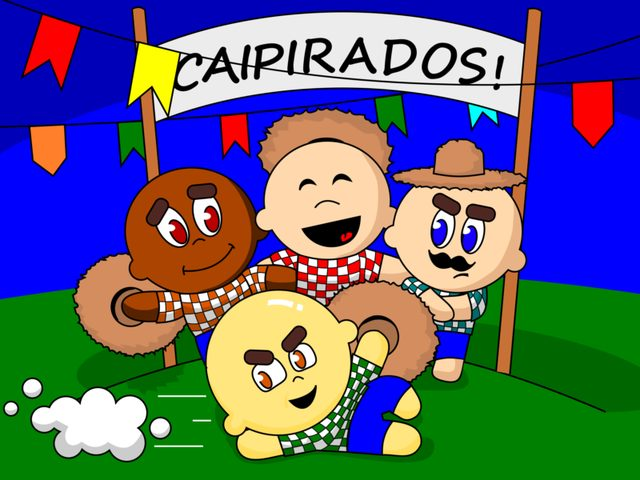

São Paulo/SP
Marcelo Antonio Pereira Marcolino
Desenvolvedor Full Stack · Professor de ensino técnico
Desenvolvo software profissionalmente desde 2018, com C#/.NET, Java, Python, SQL Server e Power Platform, em empresas como SENAI São Paulo, Wipro e G&P (com atuação na CDHU). Desde 2025, também leciono desenvolvimento de sistemas e banco de dados nas Etecs do Centro Paula Souza.
Projetos
Trabalhos acadêmicos, de game jams e de docência. Os projetos de trabalho pertencem às empresas e não aparecem aqui.

Full Metal Cria: sistema didático
Sistema em Java para um RPG de mesa, usado como projeto integrador das aulas de Banco de Dados III e Desenvolvimento de Sistemas II que leciono: persistência em MongoDB, padrões DAO e Singleton e testes automatizados com cobertura medida.
Comitê de classificadores
Previsão da avaliação de jogos de tabuleiro com dados do BoardGameGeek: cinco modelos (KNN, Naive Bayes, SVM, árvore de decisão e MLP) combinados por votação hard e soft, com notebook, relatório e painel em Streamlit.

Just Arena
Jogo 3D cooperativo de arena em que dois jogadores enfrentam um chefe, com site do jogo para cadastro, login e ranking.

Siegel and the Frost Giants
Jogo 2D de defesa de aldeias feito em 48 horas na Global Game Jam 2018. Fui um dos programadores da equipe.
NauBriguem
Jogo 2D feito na primeira game jam da Fatec São Caetano do Sul. Nos créditos do jogo: programador back-end.

Caipirados!
Jogo de arena para até 4 jogadores com tema de festa junina, em C++ com a biblioteca gráfica BGI. Nos créditos: game design e sound design.
Guia orientativo sobre a LGPD
Guia em linguagem acessível sobre a coleta de dados do usuário final: o que são dados pessoais, que golpes podem usá-los e como se proteger. Trabalho de graduação em Segurança da Informação.
Experiência
-
07/2025 – atual
Engenheiro de Software Full Stack · Nowpro Tech
Desenvolvimento full stack e automação de processos (RPA) com Python e Selenium.
-
06/2025 – atual
Professor de Ensino Médio e Técnico · Centro Paula Souza
Banco de Dados, Desenvolvimento de Sistemas e Aplicativos Informatizados em cursos técnicos das Etecs Prof. Aprígio Gonzaga e de Vila Formosa. Aprovado no concurso público para Professor de Ensino Médio e Técnico do Edital 185/08/2026.
-
05/2024 – 12/2024
Desenvolvedor Full Stack · G&P Projetos e Sistemas
Atuação terceirizada na CDHU: melhorias no sistema web de contratos habitacionais (ASP.NET, C#, SQL Server) e documentação de sistemas legados.
-
11/2022 – 10/2023
Desenvolvedor de Sistemas II · SENAI São Paulo
Aplicações web e automações com Power Apps, Power Automate e SharePoint; bancos de dados SQL Server e MySQL.
-
10/2021 – 09/2022
Programador de Sistemas de Informação · Wipro do Brasil
Manutenção e correção de aplicações web para clientes do setor bancário, com Java.
-
10/2019 – 10/2021
Programador Web Júnior · SIGhRA Sistemas Inovadores
Sistema web de rastreamento de transporte com Java, JSF e PrimeFaces.
-
03/2018 – 06/2019
Estagiário de Desenvolvimento · IM Designs
Realidade virtual com Unreal Engine no projeto My Home Experience.
Formação
Acadêmica
- Engenharia de Software, Universidade São Judas Tadeu em curso, desde 2024
- Pós-graduação Lato Sensu em Gamificação e as Tecnologias Atuais na Educação, Faculdade do Estado de São Paulo 2026
- Licenciatura em Letras Inglês, Centro Universitário FAEP 2026
- Tecnologia em Segurança da Informação, Fatec São Caetano do Sul 2023
- Tecnologia em Jogos Digitais, Fatec São Caetano do Sul 2019
- Técnico em Informática, Etec, Centro Paula Souza 2017
Cursos complementares
- Computação em Nuvem AZ-900 Fundamentals, Qualifica SP 64 h, 2024
- Java Fundamentals: avaliação final do curso, Oracle Academy 2024
- Formação Lean, Governança e Agilidade Escalada, Alura 96 h, 2024
- SharePoint Online Power User (55215), Ka Solution 32 h, 2023
- Lei Geral de Proteção de Dados, Unindústria 48 h, 2023
- Java Programmer, Impacta 100 h, 2020
Idiomas
- Português nativo
- Inglês fluente
- Espanhol intermediário
Contato
Estou aberto a oportunidades como desenvolvedor full stack. Fale comigo por e-mail ou pelo LinkedIn.